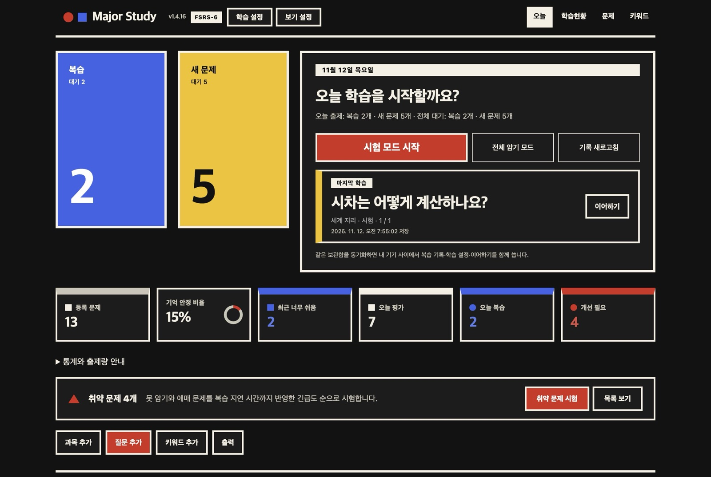
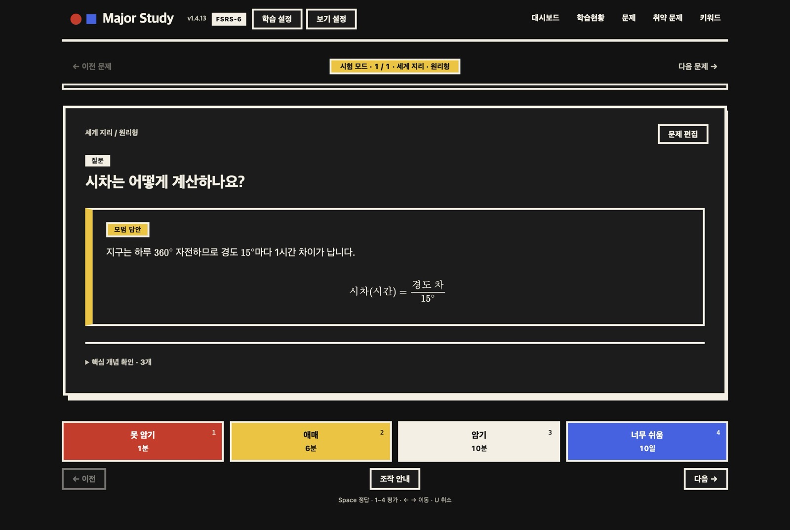
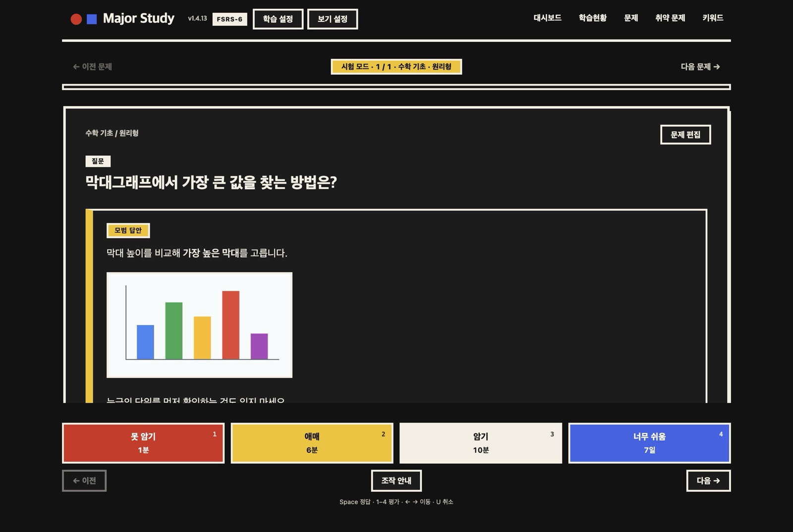
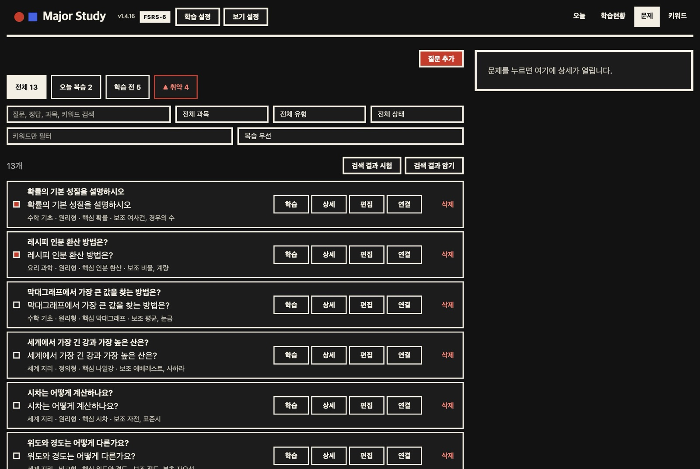
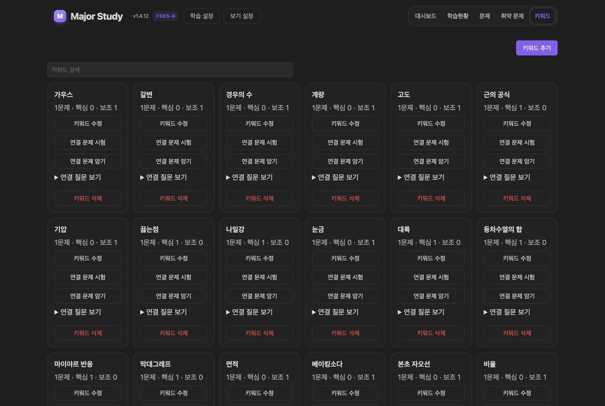
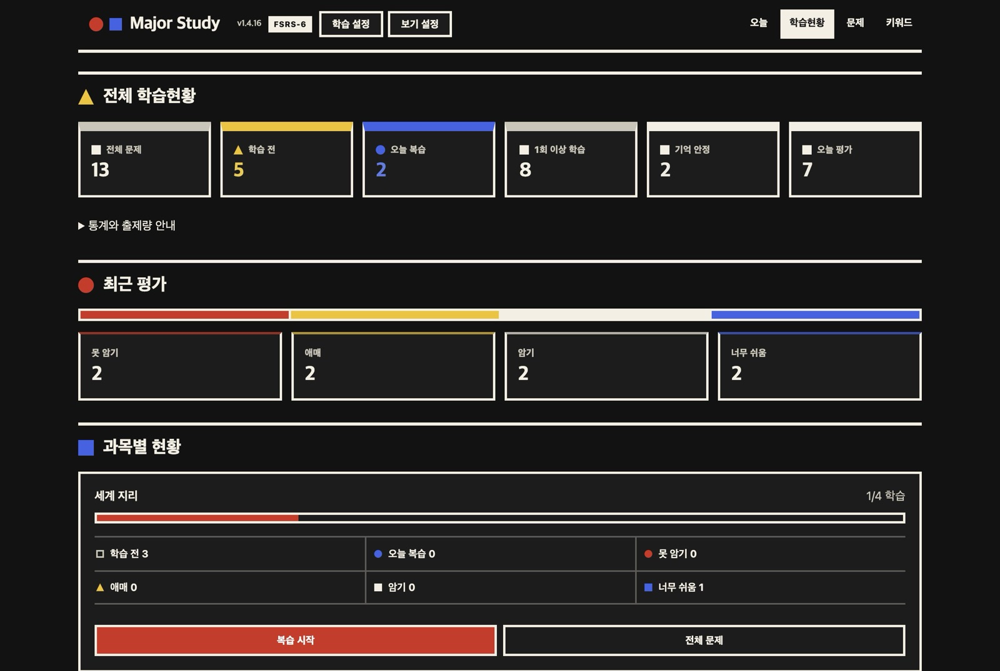
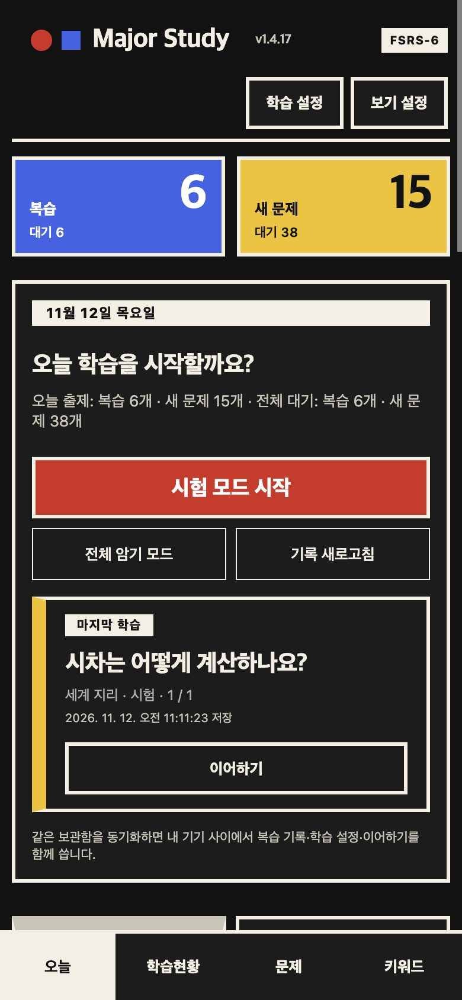
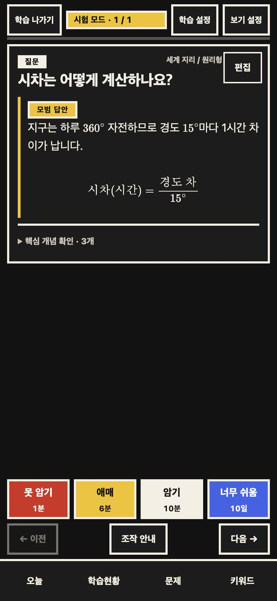

질문을 모으고,
잊기 전에
다시 꺼낸다.
Obsidian 안에서 과목·질문·키워드를 폼으로 관리하고, FSRS-6로 복습 시점을 잡아 주는 공부 플러그인. Markdown을 직접 쓰지 않아도 되고, 문제마다 노트를 만들지도 않습니다. 1.4.13부터 플러그인 화면도 이 페이지와 같은 바우하우스 스타일(빨강·노랑·파랑, 두꺼운 테두리, 각진 모서리)입니다.

세 단계로 시작
01과목 추가
리본의 뇌 아이콘이나 명령 팔레트의 MIA Study 열기로 시작해 과목을 만듭니다. 과목 폴더와 문제은행 노트가 자동으로 생깁니다.
질문 추가
과목·질문·정답·유형과 핵심·보조 키워드, 각 키워드의 의미를 폼에 입력합니다. 키워드 의미 노트도 함께 만들어집니다.
시험 시작
오늘 화면의 시험 모드 시작을 누르면 오늘 복습할 문제와 새 문제가 나옵니다. 평가할 때마다 다음 복습일이 정해집니다.
기본값: 하루 새 문제 20개 · 복습 200회 · 하루 시작 오전 4시 · 학습 단계 1분 → 10분 · 목표 기억률 90%
기능
02떠올리고, 네 단계로 평가
시험 모드는 정답을 가린 채 시작합니다. 답을 떠올린 뒤 정답을 보고 평가하면, 다음 복습 시점이 버튼 위에 바로 보입니다.
- 못 암기
- 정답을 떠올리지 못했을 때
- 애매
- 기억은 났지만 어렵게 떠올렸을 때
- 암기
- 무리 없이 떠올렸을 때
- 너무 쉬움
- 바로 떠올라 간격을 크게 늘려도 될 때
- LaTeX 수식(
$…$,$$…$$)을 Obsidian과 똑같이 렌더링 - 정규 복습은 Anki처럼 기한일 단위로 출제 — 매일 같은 시간에 공부해도 하루씩 밀리지 않음
- 1분·10분 학습 단계는 정확한 시각에 같은 세션에서 다시 출제
Space 정답 · 1–4 평가 · ← → 이동 · U 직전 평가 취소

이미지·표·코드도 그대로
정답은 평범한 Markdown이라 Obsidian에서 쓰던 문법이 그대로 통합니다.
- 보관함 이미지 삽입
![[그림.png]] - 표, 목록, 굵은 글씨, 코드 블록
- 질문에도 수식과 서식 사용 가능

과목별 문제은행과 검색
질문을 추가하면 과목 폴더의 문제은행.md 한 파일에 정리됩니다. 과목을 바꿔 저장해도 문제 ID가 유지되어 복습 기록이 사라지지 않습니다.
- 과목·유형·복습 상태·키워드 필터와 한글 조합 검색
- 생성·수정일, 취약도, 애매 우선 정렬 · 50개 단위 페이지
- 검색 결과만 골라 바로 시험 또는 암기
- 질문마다 상세·편집·연결·삭제

키워드로 개념 연결
핵심·보조 키워드마다 의미 노트가 생기고, 같은 키워드를 쓰는 질문끼리 묶입니다.
- 키워드별 연결 문제 시험·암기, 연결 질문 보기
- 이름을 바꾸거나 병합·삭제하면 모든 문제은행의 링크를 함께 갱신
- 학습 중 키워드·과목·유형·최근 평가로 관련 문제를 추천해 이어서 출제

학습현황과 취약 문제
전체·과목별로 학습 전, 오늘 복습, 기억 안정, 오늘 평가를 한눈에 보고, 숫자를 누르면 해당 문제만 모아 봅니다.
- 최근 평가 분포를 네 가지 색 막대로 표시
- 취약 문제: 오늘 화면의 취약 띠와 문제 탭의 "▲ 취약" 필터에서 못 암기·애매 문제를 복습 지연 시간까지 반영한 긴급도 순으로 정렬해 바로 시험
- 시험이 끝나면 평가별 개수·건너뜀·소요 시간 요약

그 밖의 기능
시험 모드 · 암기 모드
시험은 정답을 가리고 평가해 복습일을 정합니다. 암기는 질문과 정답만 넘겨 보며 기록을 바꾸지 않습니다(순서대로·랜덤).
직전 평가 취소
잘못 누른 평가를 그 직전의 복습 상태와 학습 순서까지 그대로 되돌립니다.
이어하기
마지막으로 본 위치를 저장해 오늘 화면에서 바로 이어갑니다.
Anki 스타일 학습 설정
하루 새 문제·복습 상한, 학습·재학습 단계, 목표 기억률, 출제 순서, 미리 학습, 평가 버튼별 고정 간격을 조정하고, 내 복습 기록으로 FSRS 매개변수를 최적화합니다.
꼬리질문 연결
기존 문제를 검색해 최대 50개까지 단방향·양방향으로 연결합니다.
과목별 Word 정리본
과목의 질문·답변 전체를 A4 서식의 .docx로 출력합니다. 표·목록·코드·보관함 이미지를 포함하고 수식은 LaTeX 표기로 보존합니다.
과목 노트 자동 동기화
질문을 추가·수정·이동·삭제할 때마다 과목별 질문 / 대답 요약 노트를 다시 정리합니다.
기기 간 동기화
같은 보관함을 동기화하면 복습 기록·학습 설정·이어하기를 여러 기기에서 함께 씁니다. 충돌한 평가는 버리지 않고 보관합니다.
자료를 지키는 저장
같은 이름의 사용자 노트는 덮어쓰지 않고, 닫히지 않은 코드 블록이나 깨지는 링크는 저장 전에 거절합니다.
Anki와 비교
031m 10m / 10m1m 10m / 10m. 첫 Hard만 Anki 5분 30초, MIA 6분MIA에 없는 Anki 기능
덱 계층과 덱별 프리셋, 오늘만 한도, 형제 카드 묻기, 자주 틀리는 카드(leech) 처리, 카드 정지·미루기, 타이머·자동 진행·오디오, 쉬는 요일(Easy Days)·복습량 분산(Load Balancing), SM-2, 초 단위 단계, 애드온, Anki 덱(.apkg) 가져오기.
같은 FSRS-6 가중치를 써도 단계·날짜·난수 처리가 모두 같지는 않아 복습일이 Anki와 하루 이틀 다를 수 있습니다. 설정 항목별 대응은 ANKI-SETTINGS.md에 있습니다.
모바일
04좁은 화면에서는 탭이 한 줄로 줄고 학습 화면 위쪽이 한 줄 막대로 줄고 평가 버튼이 한 줄로 놓입니다. Obsidian의 밝은·어두운 테마를 그대로 따르며, 두 테마 모두 같은 바우하우스 스타일입니다.
키보드가 열리면 편집창과 검색·설정 화면이 키보드 위 높이에 맞춰지고, 선택한 입력칸이 보이도록 스크롤됩니다. 버튼은 44px 이상의 터치 영역을 씁니다. 화면 왼쪽 가장자리에서 쓸면 학습을 시작한 화면으로 돌아갑니다.
데스크톱 Obsidian에서 휴대폰 폭(390px)으로 찍은 화면입니다. 실제 휴대폰 캡처가 아닙니다.


내 보관함에 이렇게 저장됩니다
05MIA/<과목>/MIA/<과목>/문제은행.mdMIA/<과목>/<과목> 노트.mdMIA/키워드/<키워드>.md.obsidian/plugins/mia-study/data.json 질문은 평범한 Markdown 콜아웃이라 플러그인 없이도 읽을 수 있습니다. GPT 등으로 문제를 만들 때는 문제 작성 가이드를 쓰세요.
### 마이야르 반응이란 무엇인가요?
> [!question] 문제
> 마이야르 반응이란 무엇인가요?
^mia-q-…
> [!mia]- 학습 정보
> 유형: 정의형
> 핵심: [[MIA/키워드/마이야르 반응|마이야르 반응]]
> 보조: [[MIA/키워드/갈변|갈변]]
#### 정답
당과 아미노산이 열을 받아 갈색과
고소한 향을 만드는 반응입니다.설치
06BRAT 추천
- BRAT 플러그인을 설치하고 켭니다.
- 명령 팔레트에서 아래 명령을 실행합니다.
BRAT: Add a beta plugin for testing - 저장소 주소를 입력합니다.
https://github.com/kimchi-kang/ mia-study-obsidian - 커뮤니티 플러그인에서 MIA Study를 켭니다.
업데이트도 BRAT에서 합니다.
ZIP 직접 설치
- 보관함을 백업하고 Obsidian을 닫습니다.
- ZIP의
main.jsstyles.cssmanifest.json세 파일을 아래 폴더에 복사합니다..obsidian/plugins/ mia-study/ data.json,ui-state.json은 그대로 둡니다. 학습 기록이 여기 있습니다.- Obsidian을 다시 엽니다.
최신 업데이트
07최종 점검 안정화
- 1.4.19 이전 버전이 남긴 설정 충돌 사본 때문에 시작이 실패할 수 있던 문제를 고쳤습니다.
- 이어하기 위치를 저장한 뒤 다시 읽어 실제로 저장됐는지 확인합니다.
1.4.20: 읽기 전용 암기 모드.
전체 변경 이력 →검증
081.4.21 자동 검사 통과 1,792·실패 0·생략 2, 타입 검사·배포 빌드 통과.
macOS Obsidian에서 모든 탭과 시험·암기, 평가·취소, 재시작을 확인했습니다.
iOS·Android 실기기, OS 키보드, 두 기기 실시간 동기화는 직접 확인하지 않았습니다.
자주 묻는 질문
09업데이트하면 기존 복습 기록이 사라지나요?
아니요. 기록과 설정은 data.json·ui-state.json에 있고, 업데이트는 main.js·styles.css·manifest.json만 바꿉니다. 1.4 계열은 기록 형식을 바꾸지 않았고, 1.4.19에서 늘어난 설정 항목(미리 학습)은 값이 없으면 기본값으로 읽습니다. 그래도 업데이트 전에 보관함을 백업해 두세요.
수식이 수식으로 안 보이고 글자 그대로 나와요.
원문에 $...$ 또는 $$...$$ 구분자와 TeX 문법이 있어야 수식으로 표시됩니다. vC(t) = Vs(1 - e^(-t/RC))처럼 구분자가 없는 문장은 자동으로 수식이 되지 않습니다.
새 버전을 깔았는데 화면이 그대로예요.
Obsidian을 완전히 껐다 다시 켜야 새 파일을 불러옵니다. 실행 중인 버전은 Major Study 제목 옆에 표시됩니다.
휴대폰과 컴퓨터에서 같이 쓸 수 있나요?
같은 보관함을 Obsidian Sync·iCloud 등으로 동기화하면 복습 기록·학습 설정·이어하기를 함께 씁니다. 모든 기기를 같은 MIA 버전으로 맞추세요. 실제 두 기기 동기화는 아직 직접 검증하지 않았습니다.
Anki와 무엇이 다른가요?
복습 알고리즘(FSRS-6)과 학습 단계·하루 경계·미리 학습·매개변수 최적화는 같은 방식입니다. 카드가 Obsidian 보관함의 Markdown으로 남고 키워드 노트로 개념끼리 연결된다는 점이 다르고, 덱 계층·카드 정지 같은 일부 기능은 없습니다. Anki와 비교 표를 보세요.
백업은 어떻게 하나요?
과목 폴더의 문제은행.md, 키워드 노트, .obsidian/의 data.json·ui-state.json(기기 간 동기화를 켰다면 MIA Study Sync/ 폴더도)을 보관함 밖의 다른 장소(외장 드라이브, 다른 클라우드, Git 등)에 주기적으로 복사하세요. 동기화는 백업이 아닙니다. 주의 사항을 보세요.
이미 정리해 둔 문제를 한꺼번에 넣을 수 있나요?
문제 자료와 MIA-AGENT.md를 GPT나 파일을 편집하는 AI 에이전트에 함께 주면 MIA 형식의 문제은행으로 정리해 줍니다. 기존 Markdown 문제는 문제 화면의 등록하지 않은 문제 후보에서 등록할 수 있습니다. 외부에서 고친 뒤에는 명령 팔레트의 MIA Study: 과목 노트 다시 동기화를 실행하세요.
버그는 어디에 알리나요?
GitHub Issues에 남겨 주세요. 명령 팔레트의 MIA Study: 시작 상태 확인 결과와 기기·Obsidian 버전을 함께 적으면 원인을 찾기 쉽습니다. 개인 문제·답안 파일은 올리지 마세요.
Obsidian 커뮤니티 플러그인 목록에서 찾을 수 있나요?
아직 등록 전이라 BRAT 또는 ZIP으로 설치합니다.
출처와 라이선스
10복습 알고리즘
- FSRS — Jarrett Ye와 Open Spaced Repetition. FSRS-6과 기본 가중치 21개를 씁니다.
- Ye, Su, Cao. A Stochastic Shortest Path Algorithm for Optimizing Spaced Repetition Scheduling. KDD 2022.
- Su, Ye, Nie, Cao, Chen. Optimizing Spaced Repetition Schedule by Capturing the Dynamics of Memory. IEEE TKDE 2023.
- ts-fsrs (MIT) — 복습일 계산
- fsrs-rs (BSD-3-Clause) — 매개변수 최적화를 이 학습 절차대로 TypeScript로 다시 구현
참고한 앱
- Anki (AGPL-3.0-or-later) — 설정 이름·기본값·동작을 참고했고 코드는 쓰지 않았습니다.
- MIA Study는 Anki·Obsidian·Open Spaced Repetition과 관계없는 개인 프로젝트입니다.
포함된 라이브러리
- markdown-it (MIT) · docx (MIT) · JSZip (MIT) · pako (MIT·zlib)
- 전체 목록과 라이선스 전문: THIRD-PARTY-NOTICES.txt
도구와 디자인
- 코드와 문서 대부분을 Claude Code(Anthropic)와 Codex(OpenAI)로 작성했습니다.
- Black Han Sans (Zess Type, SIL OFL 1.1) · 바우하우스 양식에서 영감
- 모든 출처: CREDITS.md